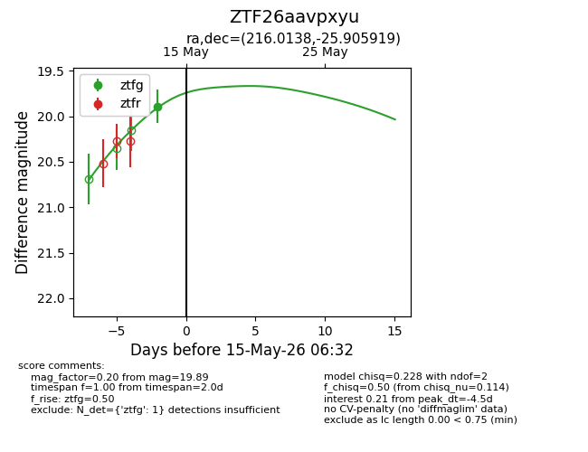
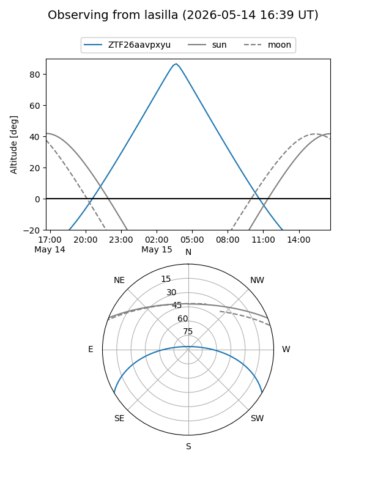
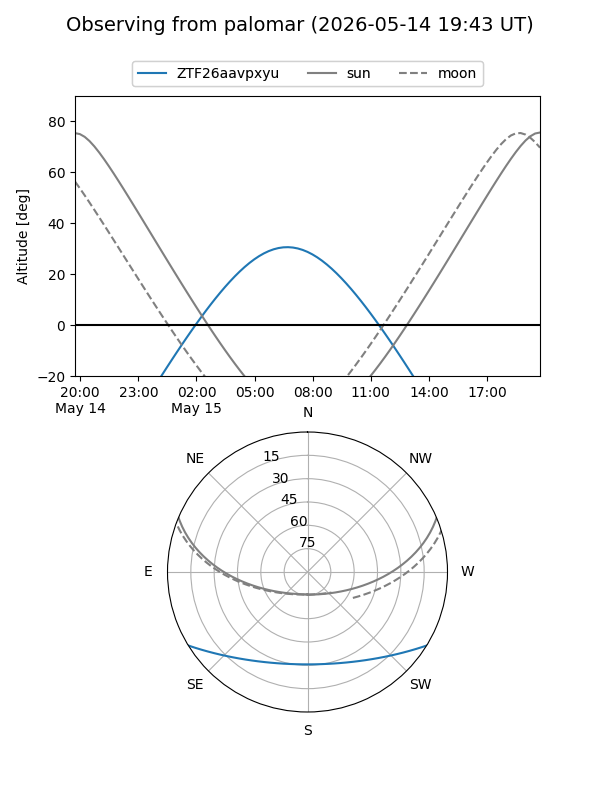
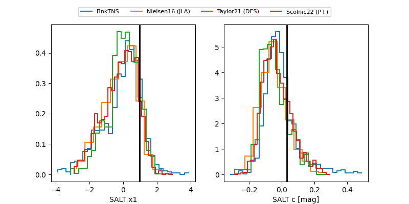

ZTF26aavpxyu
Target ZTF26aavpxyu at 2026-05-15 06:34
Aliases and brokers:
FINK: link
Lasair: link
ALeRCE: link
alt names
ZTF26aavpxyu (ztf,fink_ztf)
Coordinates:
equatorial (ra, dec) = 216.0138,-25.90592
equatorial (HMS+DMS) = 14:24:03.30,-25:54:21.31
galactic (l, b) = (327.7181,+32.46969)
Flags:
Photometry:
last ztfg=19.89
1 ztfg detections
Lightcurve

Visibility


Additional plots
